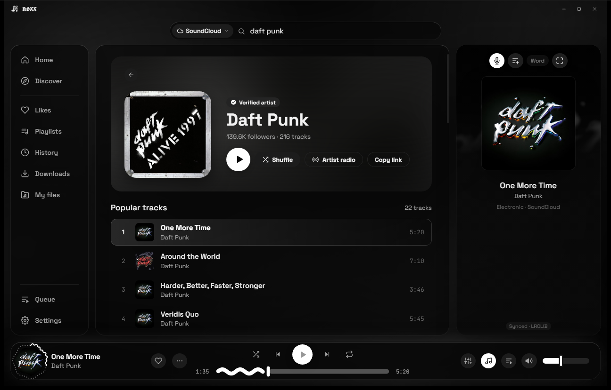

A fast desktop music player for SoundCloud, YouTube and YouTube Music. Written in Rust.

Likes and playlists sync on launch and every 30 minutes, in SoundCloud's order.
Paste a Spotify, Apple Music, SoundCloud or YouTube link. Every track gets matched and saved.
Synced lyrics, word highlighting, a full-screen karaoke mode and translation.
EQ, effects, tempo and pitch, presets, crossfade and a sleep timer.
Glasshouse theme, accent colours, custom themes, image or video backgrounds, a CSS editor.
Mixes, artist pages, radio from any song, and history.
Download tracks for offline play, or add your own music folders.
Discord Rich Presence, media keys, minimize to tray and JavaScript plugins.